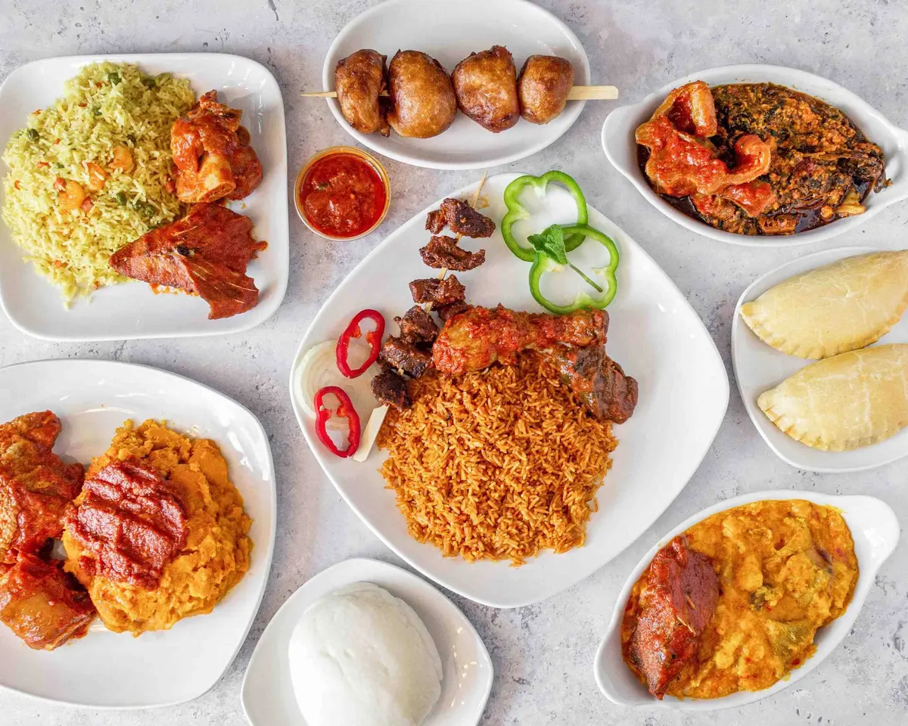
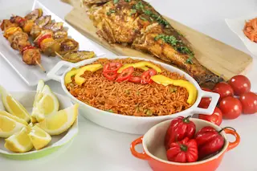
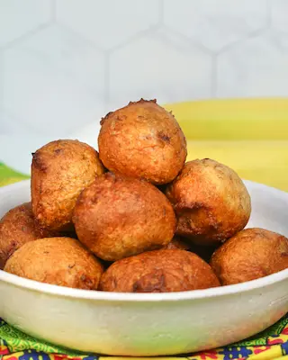

What is ChopLagos?
"Chop" is Nigerian Pidgin for "to eat." ChopLagos is a guide to the street food and local dishes found across Lagos — what they are, where they're commonly sold, how spicy they are, and roughly what they cost. Whether you're visiting for the first time or you've lived here your whole life, there's always another dish worth trying.
A Few Favorites
A small taste of what's waiting for you on the full dish guide.

Jollof Rice
Nigeria's most famous export — a rich, smoky tomato rice dish found in nearly every part of Lagos State.
Suya
Spiced grilled skewers sold after dark, best found around Obalende, Yaba and most part of the Lagos Island.

Puff-Puff
Sweet, fluffy fried dough — a snack you'll find on nearly every street corner.
Have a Dish We're Missing?
ChopLagos grows with help from people who actually know the food. Suggest a dish, rate one you've tried, or just tell us where to find the best version of it.
Submit a Dish